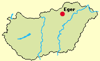
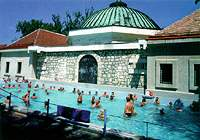
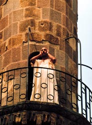
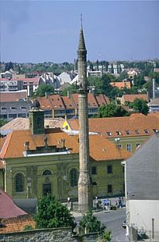

|
|
Eger
in Ungarn wird
auf Deutsch Erlau
genannt.
Die
Stadt liegt im Bükk-Gebirge (Bükk=Buche).
Lage: Eger
mit 62.000 Einwohnern befindet sich ca. 120 km
nordöstlich von Budapest, in der Nähe der Autobahn
M3. Eger zählt mit seinen berühmten Monumenten aus
dem Mittelalter und der Barockzeit zu den schönsten
ungarischen Städten. |
 |
Eger
ist ein -
Das türkische Thermalbad des Pascha Armut befindet sich in der
Stadtmitte. Gleich daneben
angebaut ist ein modernes Thermalbad und eine öffentlich
zugängliche Schwimmhalle liegt
auch in der Nähe. Diese wird jedoch weitgehend von den
landesweit bekannten Spitzensportlern der Stadt genutzt.
Das früher städtische Strandbad ist heute teileie
überdeckt und steht den Beuchern
im Kurbetrieb von Hotel Flora zur
Verfügung.
Weitere Kurbäder in der Nähe befinden sich in den
Ortschaften , ,
, ,
und
. |
 |
 |
Eger
bietet seinen Gästen viele historische
Sehenswürdigkeiten. Am
bedeutendsten ist die mittelalterliche Burg, daneben die
schönen
barocken - mit wertvollem Interieur geschmückten Kirchen, vor
allem der Dom, die Hochschule, die Monumente aus der
Türkenzeit,
die historische Burg mit Kasematten u.a. Hier befindet sich auch eine
der größten Festungen des Landes, die 1552 den
Angriff der
Türken widerstand und erst nach mehreren Jahren erobert werden
konnte. |
|
|
 |
Im István Dobó Museum wird
vor allem an
den
großen Kampf gegen die Türken im Jahre 1552 erinnert.
Das Minarett aus
dem 17. Jahrhundert galt lange Zeit als das nördlichste
Minarett in Europa und wurde erst in den letzten Jahren von mehreren
Minarettneubauten in Deutschland überholt. Es ist mit 40 m das
größte Minarett in Ungarn. Der 14eckige Turm wurde
aus Sandstein gebaut, befindet sich trotzdem in einem guten Bauzustand.
Der angebaute Djami wurde aus stadtplanerischen Gründen im
Jahre 1841 abgerissen. Oben auf der Turmspitze stehen heute Kreuz und
Halbmond nebeneinander. Nach 350 Jahren erklang der Gesang des
Müezzins im Jahre 1997 erneut. |
 |
| |
Weinbau
- Die Stadt Eger ist das Zentrum einer berühmten
ungarischen . Unzählige Weinkeller in der Umgebung,
einige sogar in der
Stadt erwarten Ihren Besuch.
In der Weinbauregion Eger
werden viele ausgezeichnete Weine, vor allem das weltberühmte
Erlauer Stierblut (ein trockener Rotwein der Sorte
Blaufränkisch) und der Hárslevelű (von der
einheimischen Rebsorte "Lindenblatt", ein vollmundiger, besonders
süßer Weißwein) erzeugt. Der
Domkeller von Eger beherbergt einen großen Weinkeller und
eine Weinstube.
|
Ausflugtipps:
|
- Nationalpark
Hortobágyi Puszta
-
Tropfsteinhöhle
in .
- Wanderung
nach Mónosbél
- Ab einer Höhe von 600 Metern
wachsen hauptsächlich Buchen, die diesem circa
20 Kilometer langen und 5 Kilometer breiten
Hochplateau seinen Namen verliehen haben. Es ist von allen Seiten her
in serpentinenartigen Straßen zu erreichen. Die
wunderschönen Buchenwälder des Bükk-Gebirges
wurden 1976 teilweise zum Nationalpark erklärt. Diese
landschaftlich schöne Rundfahrt ist besonders reizvoll.
- Fahrt
über Mónosbél nach
Szilvásvárad -
Hier kann man das Lippizanergestüt besuchen und mit der
Schmalspurbahn zum Wasserfall im Szalajka Tal fahren. Dort gibt es ein
Waldarbeitermuseum zu besichtigen.
- Fahrt
Szilvásvárad-Istállóskő--Miskolc- - In Istállóskő
ist der Aufstieg zum dritthöchsten Berg Ungarns
(959 Meter). - In Lillafüred sollte man sich das
Palasthotel am See nicht entgehen lassen. Von
Lillafüred führt eine Schmalspurbahn nach Miskolc. Ein
Besuch der Szent-István-Tropfsteinhöhle bietet sich
an.
- Garadna-Noszvaj-Eger- - Nach
Garadna gelangt man, wenn man die
Schmalspurbahn in die
entgegengesetzte Richtung benutzt. Eine Wanderung zur Klosterruine ist
empfehlenswert. Machen Sie eine Rast im
Schloßhotel Noszvaj, bevor es zurück
nach Eger geht. Im
Karstgebirge von Aggtelek bis hinüber in die Slowakei reichen
die gewaltigen und verzweigten Tropfsteinhöhlen - ein
faszinierendes Naturschauspiel.
|
| |
|
Ungarn-Tourist Team

|
| |
| |
|